سال های مربیگری و آموزش ورزشکاران در دو و میدانی، والیبال و کشتی
با فعالیت های منوچهر شمشیری در سه رشته دو و میدانی، والیبال و کشتی آشنا شوید.
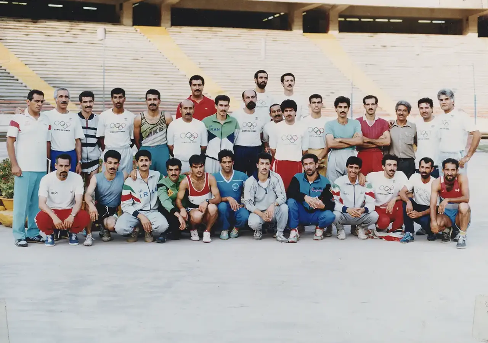
مروری بر سال های مربیگری او و فعالیت هایش در آموزش و پرورش دوندگان.
بیشتر بخوانید ←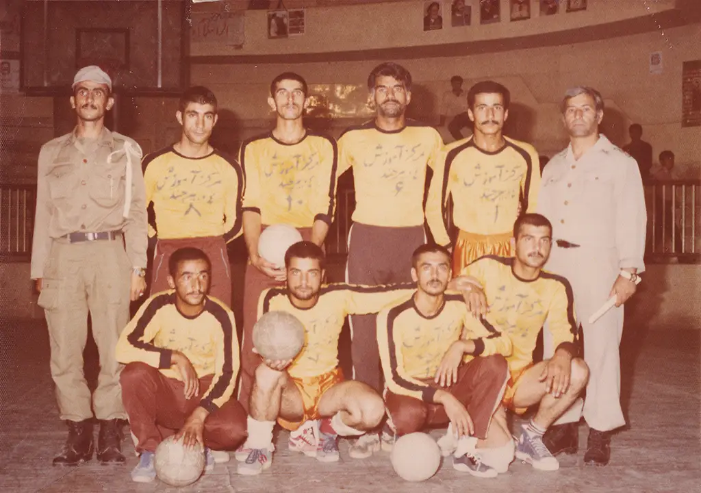
نگاهی به فعالیت های او در والیبال و همکاری با تیم های ورزشی.
بیشتر بخوانید ←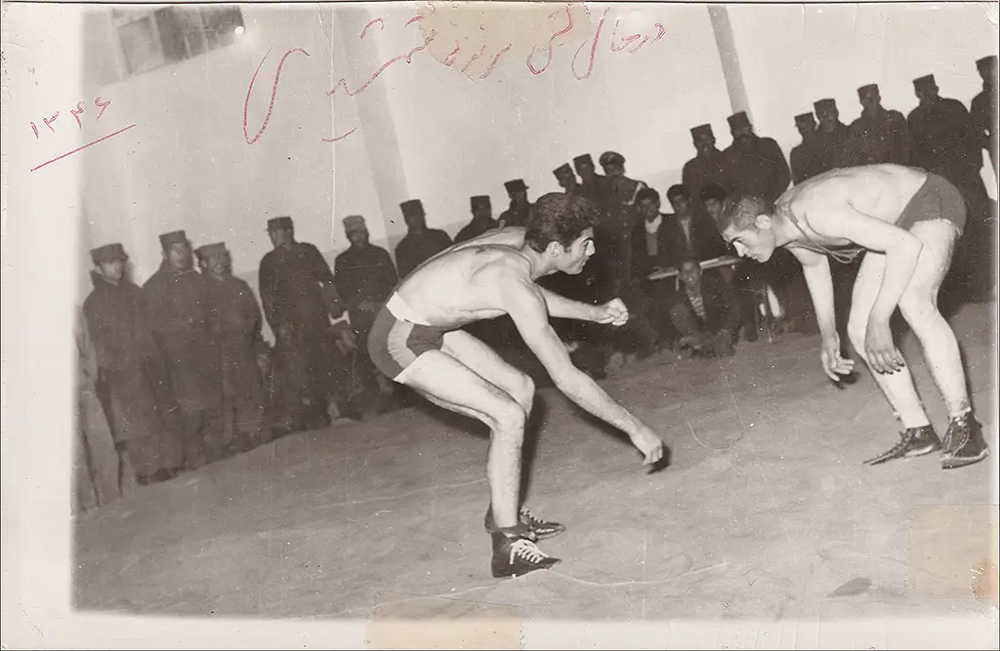
آشنایی با سابقه فعالیت او در کشتی و سال های آغازین مسیر ورزشی اش.
بیشتر بخوانید ←منوچهر شمشیری سال های زیادی از زندگی خود را به مربیگری و پرورش ورزشکاران اختصاص داد.
منوچهر شمشیری پس از سال ها فعالیت به عنوان ورزشکار، بخش مهمی از دوران حرفه ای خود را به مربیگری اختصاص داد. او در رشته دو و میدانی فعالیت گسترده ای داشت و در کنار آن، در والیبال نیز به عنوان مربی فعالیت کرد. تجربه او در ورزش قهرمانی، زمینه ای برای آموزش ورزشکاران جوان و آماده سازی آنها برای حضور در رقابت های ورزشی فراهم کرد.
شمشیری در دوران مربیگری خود در بیرجند و استان خراسان نقش فعالی در آموزش و پرورش ورزشکاران داشت. شماری از شاگردان او به رقابت های کشوری راه یافتند و به موفقیت هایی دست پیدا کردند. او همچنین در دهه ۱۳۷۰ شمسی مسئولیت سرپرستی تیم ملی دو و میدانی ایران را بر عهده داشت.
مرور سال های فعالیت منوچهر شمشیری، از دوران قهرمانی تا مربیگری، بخشی از زندگی ورزشی او و ارتباطش با ورزشکاران و جامعه ورزشی را روایت می کند.
مروری بر سال های مربیگری منوچهر شمشیری و فعالیت او در تیم ملی دو و میدانی ایران.
منوچهر شمشیری، قهرمان سابق دو و میدانی آسیا و دارنده مدال در مسابقات جهانی نظامیان، بین سال های ۱۹۹۱ تا ۱۹۹۶ به عنوان مربی و سرپرست تیم ملی دو و میدانی ایران فعالیت کرد.
او در دوران مربیگری خود در آموزش و آماده سازی ورزشکاران دو و میدانی نقش داشت. از جمله ورزشکارانی که نام آنها در ارتباط با فعالیت های ورزشی او مطرح شده است، می توان به حمید سجادی، عبدالصمد گرگانی و حسن متحد سبزواری اشاره کرد. این دوره بخشی از سال های فعالیت او در سطح ملی بود.
تجربه منوچهر شمشیری در دوران قهرمانی و سال های فعالیت در تیم ملی، بخش مهمی از سوابق ورزشی و مربیگری او را تشکیل می دهد.
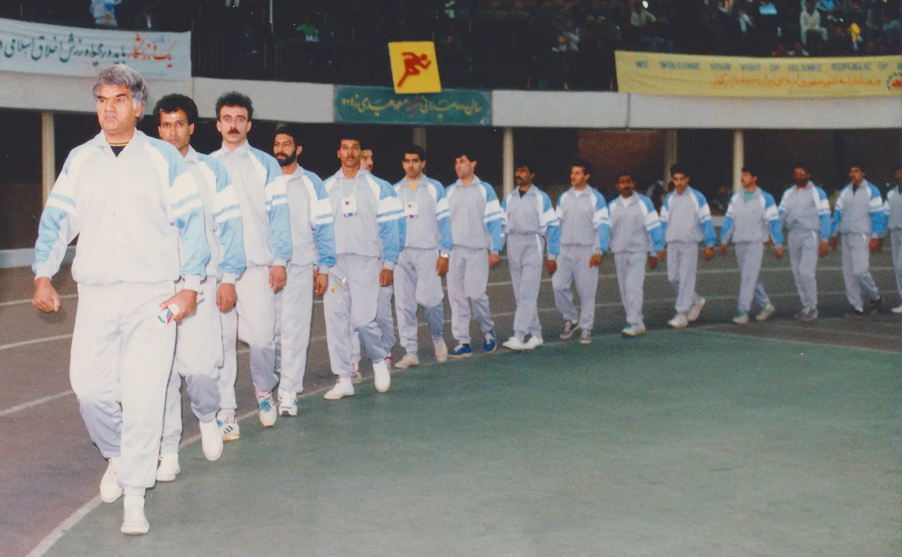
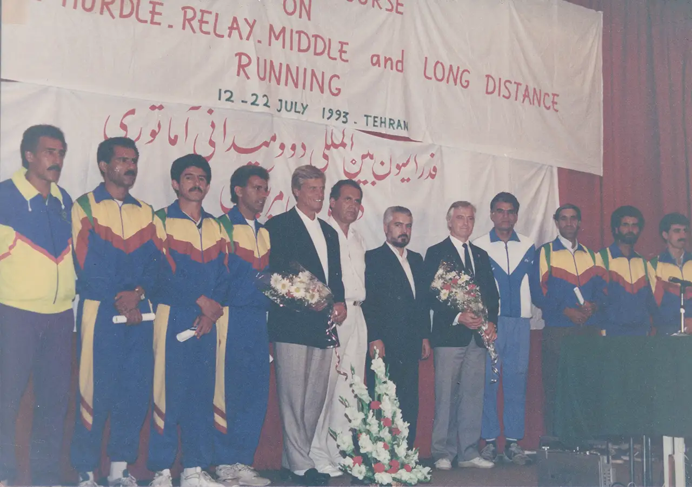
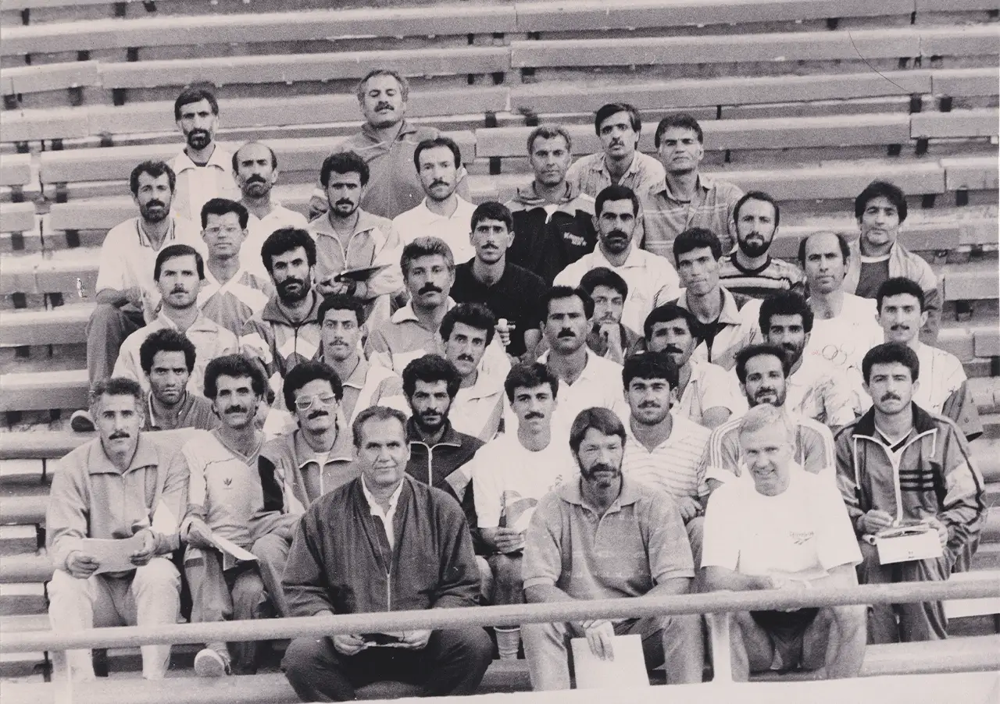
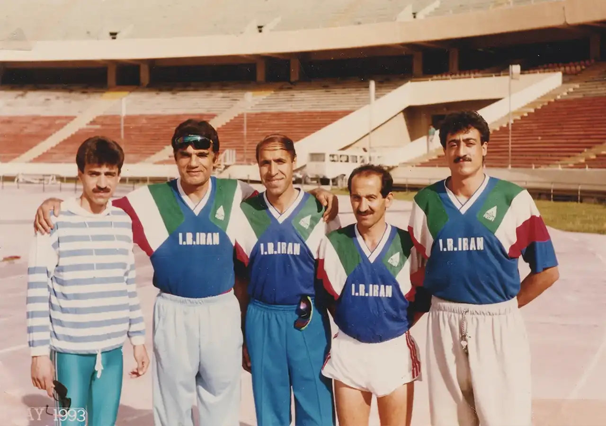
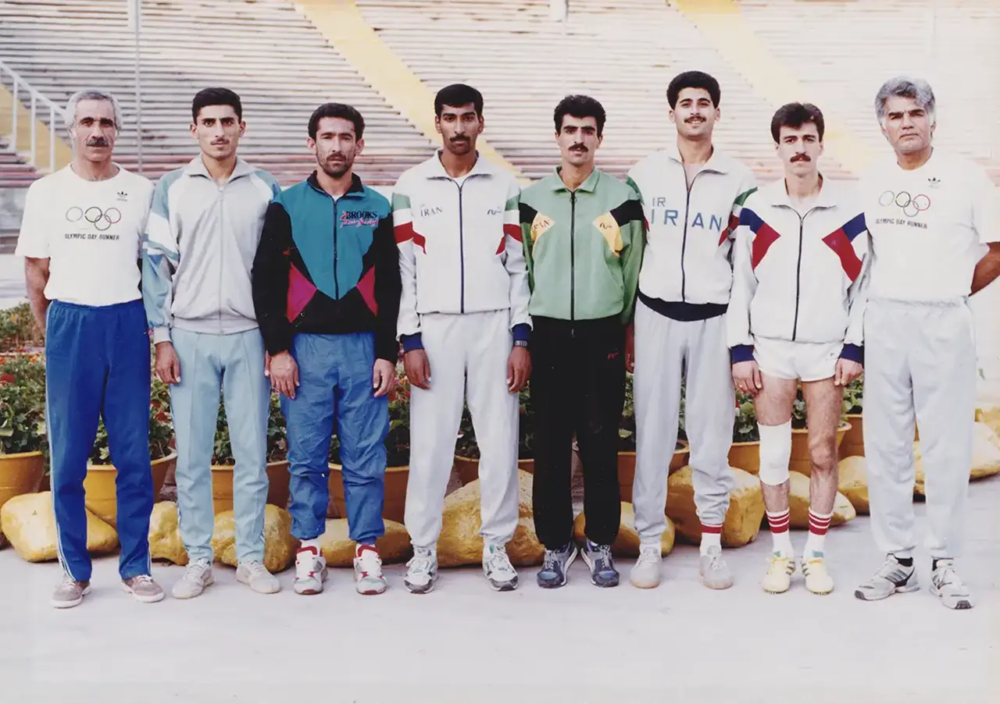
سال های همکاری با تیم ملی دو و میدانی ایران
منوچهر شمشیری در فاصله سال های ۱۹۹۱ تا ۱۹۹۶ به عنوان مربی و سرپرست تیم ملی دو و میدانی ایران فعالیت داشت. مسئولیت او شامل همراهی با ورزشکاران و مشارکت در روند آماده سازی تیم برای حضور در رقابت های ورزشی بود.
در این سال ها، شمشیری با ورزشکاران و دیگر اعضای کادر ورزشی همکاری داشت. عکس های این دوره، بخشی از خاطرات و فعالیت های او در کنار ورزشکاران دو و میدانی ایران را نشان می دهند.
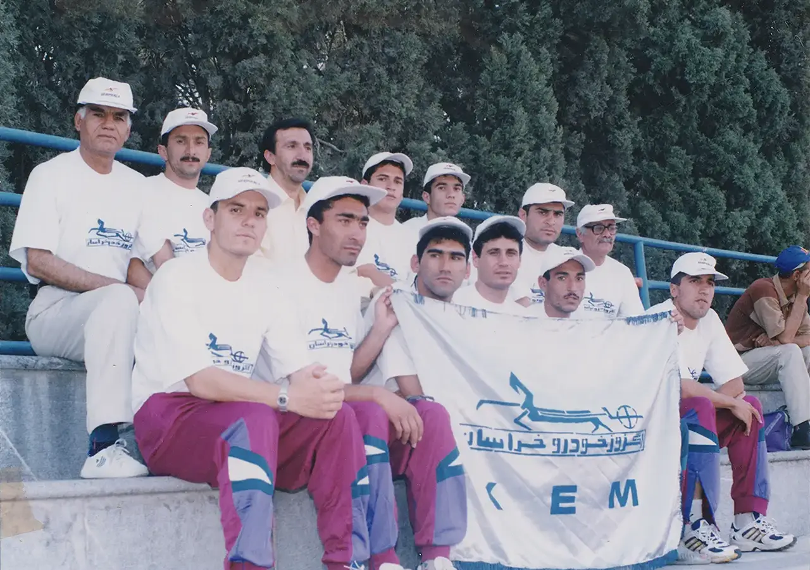
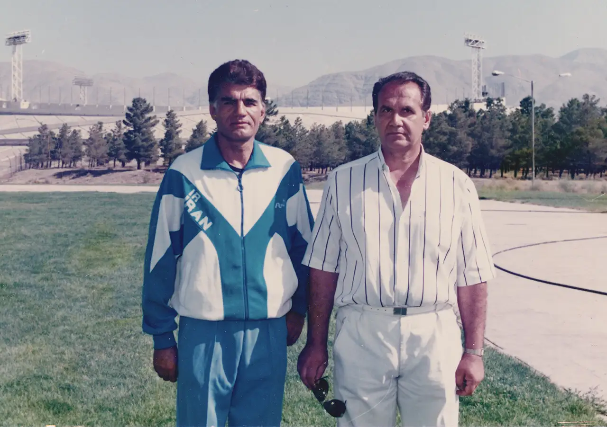
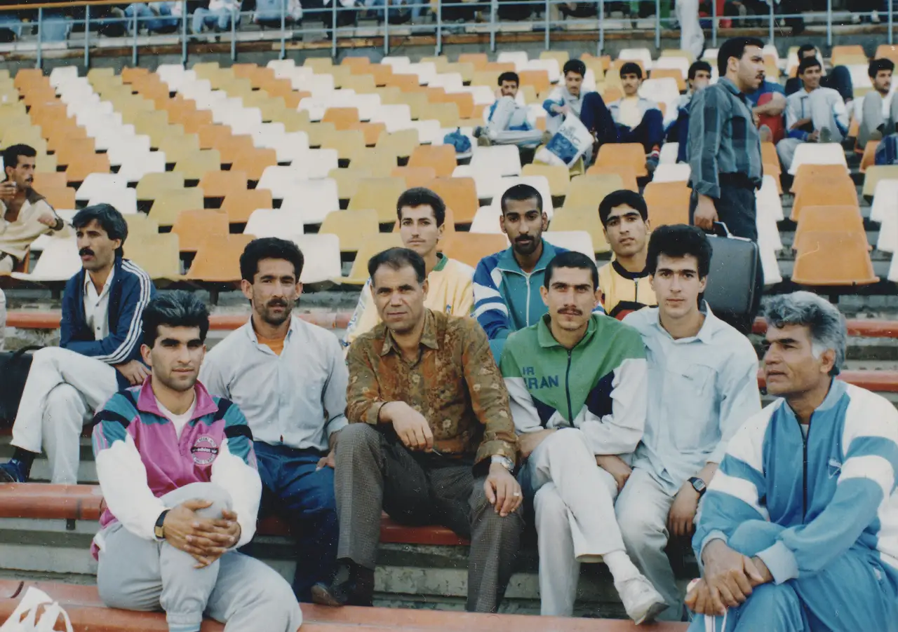
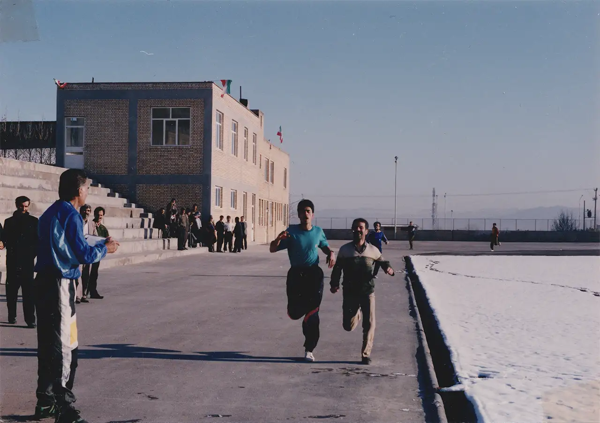
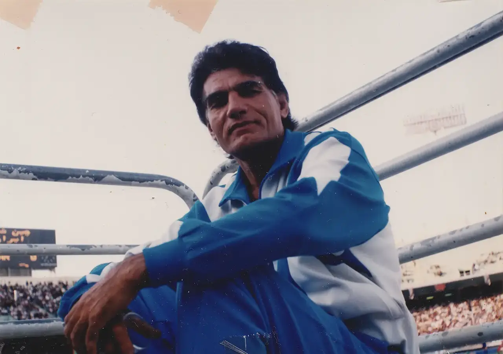
آغاز دوره فعالیت منوچهر شمشیری در تیم ملی دو و میدانی ایران.
همکاری با ورزشکاران و مشارکت در فعالیت های تیم ملی دو و میدانی ایران.
ادامه فعالیت شمشیری در دوره ای از حضور ورزشکاران ایرانی در رقابت های بین المللی.
پایان بازه زمانی ذکر شده برای فعالیت او در تیم ملی دو و میدانی ایران.
مروری بر تجربه های دوران قهرمانی و مربیگری او
منوچهر شمشیری پس از سال ها فعالیت به عنوان ورزشکار، بخش مهمی از زندگی خود را به مربیگری و آموزش ورزشکاران اختصاص داد. او در بیرجند و استان خراسان فعالیت گسترده ای داشت و در ادامه، به عنوان مربی و سرپرست تیم ملی دو و میدانی ایران فعالیت کرد. شمشیری در حدود ۱۰ سال پایانی عمر خود در مشهد زندگی کرد و در این شهر نیز به تربیت ورزشکاران جوان ادامه داد.
شماری از شاگردان او در مشهد با راهنمایی و آموزش هایش به موفقیت های ورزشی و مقام های ارزشمندی دست یافتند. او همچنین در برگزاری مسابقات دو و میدانی در سطح استانی و کشوری مشارکت داشت و از جمله افرادی بود که برای برگزاری این رقابت ها و پیشبرد فعالیت های ورزشی همکاری می کردند. عکس ها و خاطرات به جا مانده از آن سال ها، بخشی از فعالیت های او در کنار ورزشکاران و جامعه ورزشی را به تصویر می کشند.
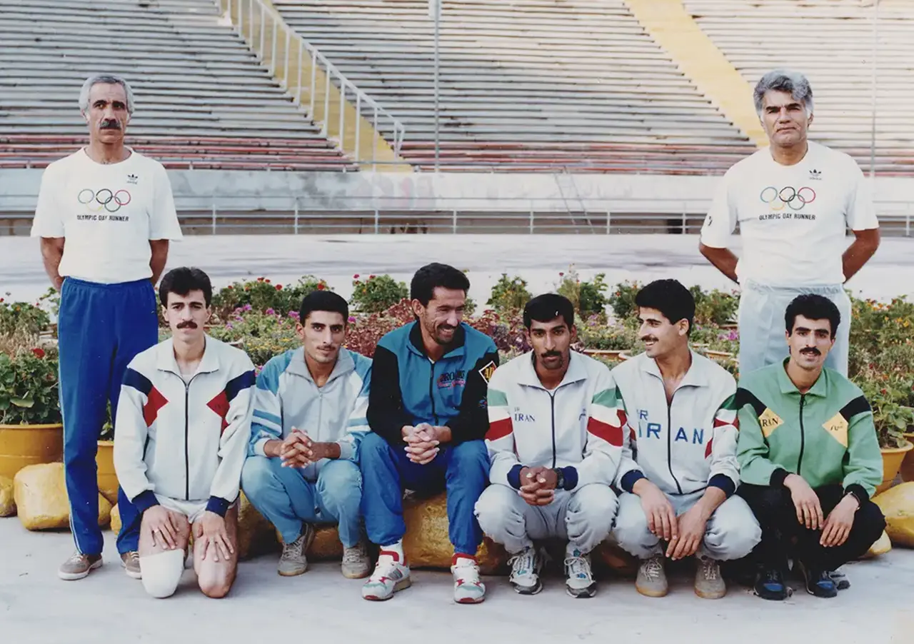
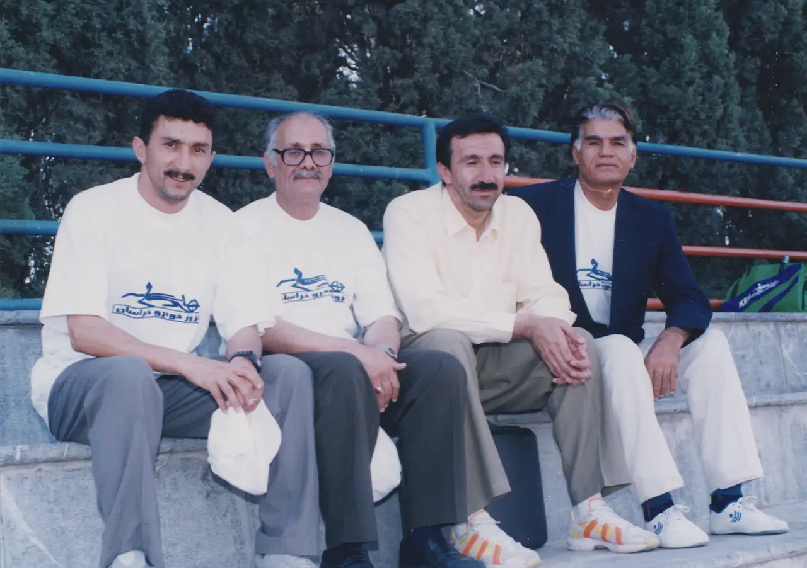
ساخت یک میراث غالب در والیبال خراسان.
منوچهر شمشیری در دهههای ۵۰ و ۶۰ شمسی، کارشناس و مربی قدر والیبال در خراسان بود. او توانایی چشمگیری در کشف و پرورش استعدادها داشت و ستارگان آیندهای چون حسن شمشیری، باقر سلیماننژاد و جمال قوچاننژاد (پدر رضا قوچاننژاد، فوتبالیست ملی) را پرورش داد.
او تحت رهبری بلامنازع خود، تیمهای شهرهای کوچک را به قهرمانی رساند. او بارها نام شهر بیرجند را در سطوح استانی و ملی مطرح کرد — در دو و میدانی و به ویژه در والیبال. تیمهای او چنان یکدست و قدرتمند بودند که بسیاری از شاگردانش که از صفر شروع کرده بودند، به ستارگان درخشان ورزشی تبدیل شدند و اغلب به طور همزمان در چندین رشته تمرین و رقابت میکردند.
در دهه ۶۰ شمسی، شمشیری تیم والیبال بیرجند را به قهرمانی استان خراسان رساند. آنها در این مسیر تمام شهرهای بزرگ از جمله مشهد، نیشابور، بجنورد و قوچان را شکست دادند — با یک پیروزی تاریخی بر تیم قدرتمند والیبال مشهد که پیش از آن عناوین کشوری را در اختیار داشت. در دوران طلایی مربیگری او، بیرجند چنان مدعی بود که میتوانست بزرگان والیبال کشور را سورپرایز کند.
در فهرست قهرمانان آسیایی پرورشیافته توسط شمشیری، نام باقر سلیماننژاد و جمال قوچاننژاد با افتخار در والیبال ذکر شده است. تأثیر او بر این ورزش چنان عمیق بود که شاگردانش نه تنها در سطح محلی، بلکه در سطح قارهای نیز درخشیدند.
دوران باشکوه والیبال بیرجند زمانی پایان یافت که شمشیری شهر را ترک کرد، بازنشسته شد و در نهایت به مشهد مهاجرت کرد. عنوان نخست کشوری در والیبال پس از رفتن او هرگز برای بیرجند تکرار نشد — حتی پس از اینکه بیرجند به مرکز استان ارتقا یافت. این امر همچنان گواهی ماندگار بر نفوذ بینظیر منوچهر شمشیری است.
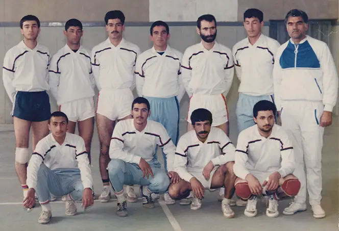
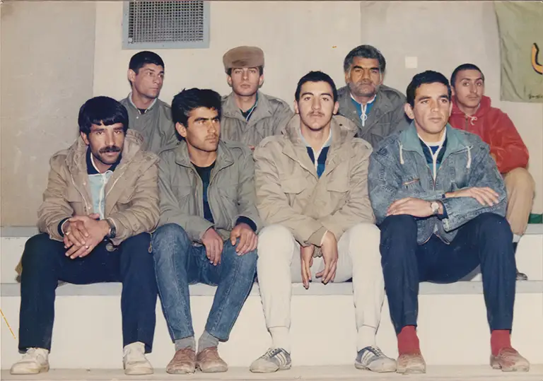


ساختن قدرت، نظم و قهرمانان روی تشک.
در دهههای ۴۰ و ۵۰ شمسی، منوچهر شمشیری برای اولین بار چهرههای افسانهای چون رضا سوختهسرایی و فیلابی را در پادگان ۰۴ بیرجند استعدادیابی و تمرین داد. او چشمی تیزبین برای شناسایی استعدادهای ورزشی از پایه داشت. زمانی که سربازان جوان برای خدمت سربازی میرسیدند، شمشیری آنها را به سمت ورزش هدایت میکرد و برای صحنه ملی پرورش میداد.
او اغلب به یاد میآورد که سوختهسرایی را هنگام ورودش به پادگان کشف کرد و اشاره میکرد که آنها حتی نمیتوانستند لباس یا پوتین مناسبی برای اندازه او پیدا کنند. شمشیری با تشخیص پتانسیل طبیعی او برای کشتی، وی را به تشک دعوت کرد و بلافاصله تمرین را آغاز نمود. طولی نکشید که او به سوختهسرایی پیشنهاد داد تا در مسابقات کشوری شرکت کند.

شمشیری با تکیه بر پیشینه گسترده خود در ورزشهای پایه و قدرتی — مانند دو و میدانی، کوهنوردی و البته کشتی — شاگردانش را همچون کوهی در برابر رقبا پرورش میداد. در بازیهای آسیایی ۱۹۷۴، او عضو تیم دو و میدانی بود، در حالی که دو شاگرد اعجوبهاش، فیلابی و سوختهسرایی، در کشتی به رقابت پرداختند. هر دو کشتیگیر به مدال طلا و نقره دست یافتند و میراث شمشیری را به عنوان یک استعدادیاب افسانهای تثبیت کردند.
رضا سوختهسرایی که توسط شمشیری در پادگان ۰۴ بیرجند کشف شد، از یک سرباز ناشناس به یک قدرت کشتی تبدیل شد. تحت هدایت شمشیری، او به سرعت در ردههای مختلف مسابقات کشوری بالا رفت و در نهایت بر سکوی بازیهای آسیایی ۱۹۷۴ ایستاد.
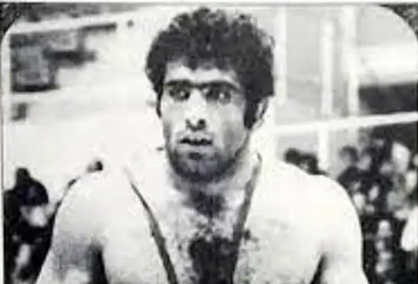
فیلابی، استعداد فوقالعاده دیگری که شمشیری در همان دوران شناسایی کرد، به یک کشتیگیر در سطح جهانی تبدیل شد. موفقیت او در کنار سوختهسرایی در بازیهای آسیایی ۱۹۷۴، گواهی بر توانایی بینظیر شمشیری در پرورش قهرمانان از پایه است.
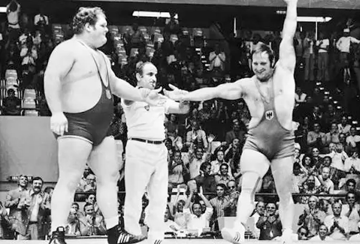